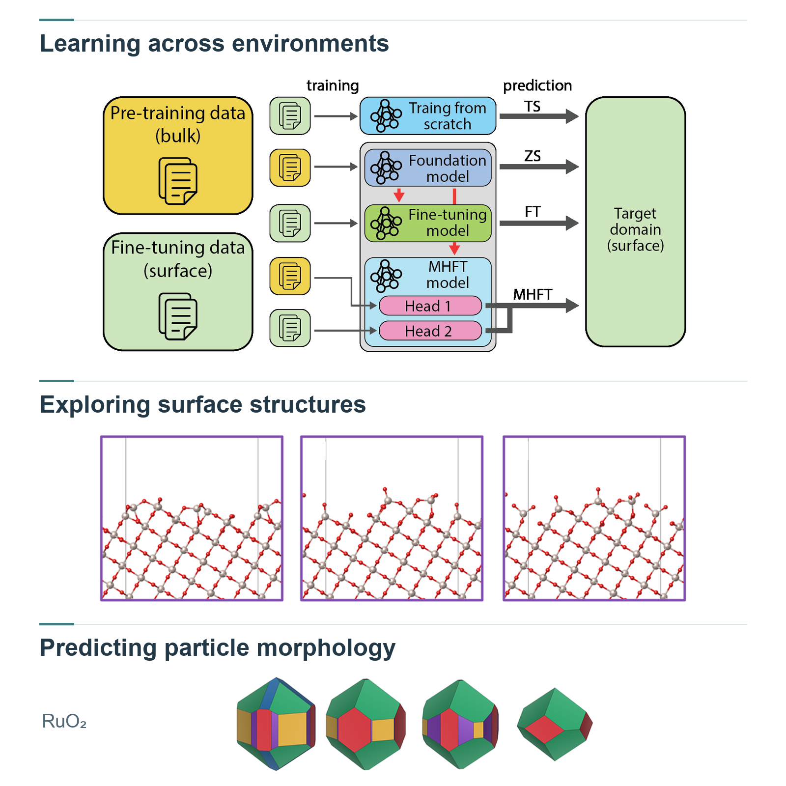
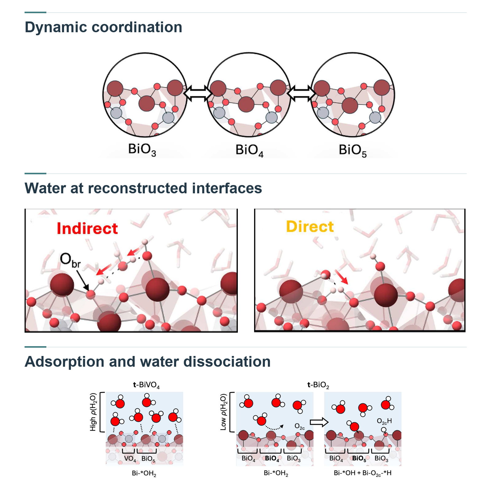
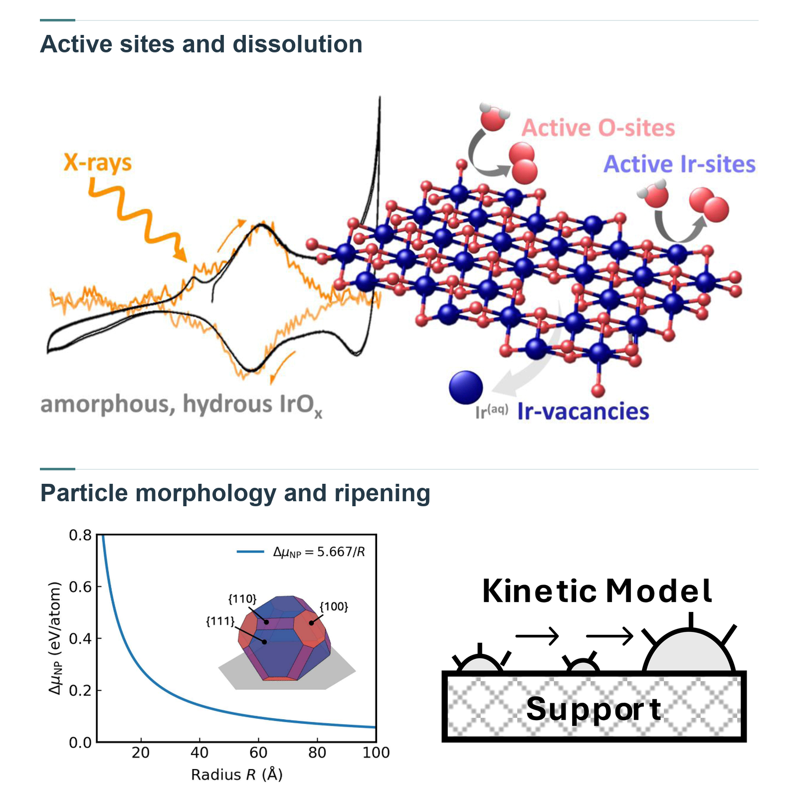
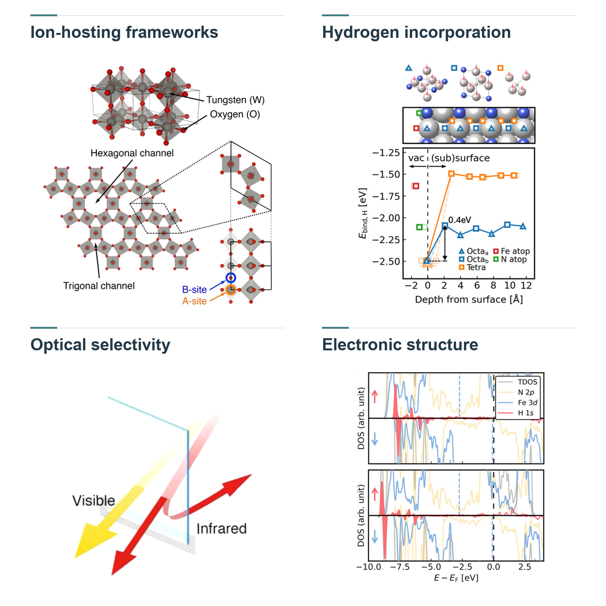

Four connected directions
Research
First-principles understanding and data-driven modeling for functional materials.

Learning the energy landscape.
Machine-Learning Atomistic Simulation
머신러닝 원자 시뮬레이션
An atomic structure is one point in a vast energy landscape. Finding the arrangements that matter—and following how they evolve—can quickly push first-principles calculations to their limits. We train machine-learning potentials and use active learning to decide where new calculations are needed. This lets us explore more of that landscape and follow atomic motion at scales that would otherwise be difficult to reach.
제일원리 계산에 기반한 머신러닝 원자간 포텐셜과 능동학습을 결합하여 복잡한 원자구조 및 에너지 지형을 탐색합니다. 이를 통해 대규모·장시간 원자 시뮬레이션을 수행하고, 다양한 환경에서 나타나는 구조적 안정성과 동역학을 분석합니다.
Machine-learning potentials · Active learning · Structure exploration
Explore our publications →
Following materials in motion.
Dynamic Surfaces & Interfaces
동적 표면과 계면
A surface drawn as a perfect crystal is only the beginning of the story. As molecules arrive and reaction conditions change, atoms can rearrange, defects can form, and interfaces can take on new structures. We follow these changes through atomistic simulations to understand which structures emerge in the working environment—and how they shape the chemistry that follows.
반응 환경에 따른 표면 재구성, 결함 형성, 흡착 및 계면 구조의 변화를 원자 수준에서 분석합니다. 열역학적 조건과 주변 화학종이 표면·계면의 안정성과 동역학에 미치는 영향을 규명하고, 구조 변화와 반응성 사이의 관계를 연구합니다.
Surface reconstruction · Defects & adsorption · Interface dynamics
Explore our publications →
Understanding performance and its limits.
Catalytic Activity & Stability
촉매 활성과 안정성
A catalyst must do more than make a reaction happen: it must keep working. The atomic sites that enable a reaction can also change as particles grow, atoms dissolve, or the surrounding environment shifts. We trace reaction pathways alongside these degradation processes to understand what makes a site active, how that activity is lost, and what could help preserve it.
촉매 활성점의 원자구조와 반응 경로를 분석하여 구조–활성 관계를 규명합니다. 소결과 용출을 비롯한 촉매 열화 과정 및 반응 조건에 따른 구조 변화를 함께 연구하여, 활성과 안정성을 결정하는 원자 수준의 요인을 이해합니다.
Active sites · Reaction mechanisms · Sintering & dissolution
Explore our publications →
Designing structure for function.
Functional Materials Design
기능성 소재 설계
The way electrons, spins and ions move through a material begins with its atomic structure. Changing the composition, rearranging atoms or altering symmetry can open new pathways—or interrupt existing ones. We explore these connections computationally, asking how deliberate changes at the atomic scale can guide transport and lead to materials with useful, tunable functions.
소재의 조성, 원자 배열 및 대칭성이 전자·스핀·이온 수송 특성에 미치는 영향을 분석합니다. 원자구조와 물성 사이의 상관관계를 바탕으로, 수송 기능을 제어하기 위한 기능성 소재의 설계 원리를 연구합니다.
Composition & symmetry · Electronic & spin transport · Ion transport
Explore our publications →Join CCML
Explore materials.
Build new understanding.
Interested in computational chemistry, atomistic modeling or AI for materials?